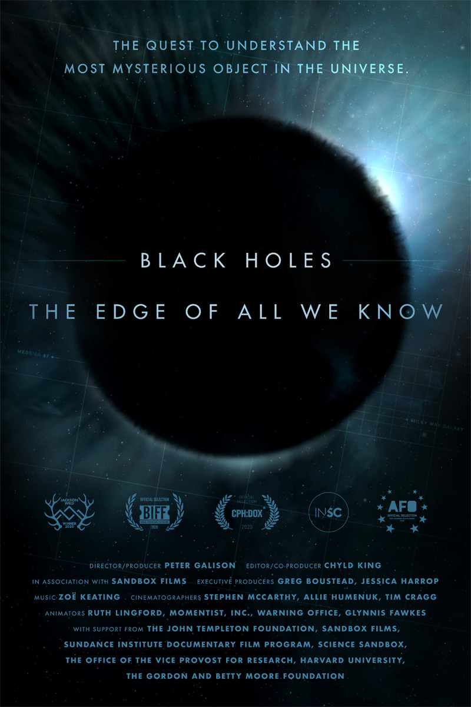

Por meio de entrevistas exclusivas e imagens de arquivo, esse documentário traça um perfil íntimo de Michael
Schumacher, sete vezes campeão da Fórmula 1.
Elenco:
Michael Schumacher

Junte-se aos cientistas que buscam capturar a primeira imagem de um buraco negro e explorar os limites do
conhecimento humano sobre o universo.
Elenco:
Elenco: Stephen Hawking, Lindy Blackburn, Andrew Strominger
Filmado ao longo de 14 meses com acesso sem precedentes ao círculo restrito do homem e do esporte, este é o
primeiro filme oficial e autorizado do jogador português Cristiano Ronaldo, uma das figuras mais célebres do
futebol. Pela primeira vez, o mundo tem acesso imparcial e inédito ao atacante, através de conversas
profundas, filmagens fantásticas de jogos e vídeos de arquivo jamais vistos antes.
Elenco:
Cristiano Ronaldo,Lionel Messi,Hugo Aveiro,Maria Dolores dos Santos, Rio Ferdinand .
Especialistas em tecnologia do Vale do Silício soam o alarme do perigoso
impacto das redes sociais na democracia e na humanidade como um todo.
Elenco:
Tristan Harris,Skyler Gisondo,Jaron Lanier,Kara Hayward,Tim Kendall,Vicent Kartheiser.